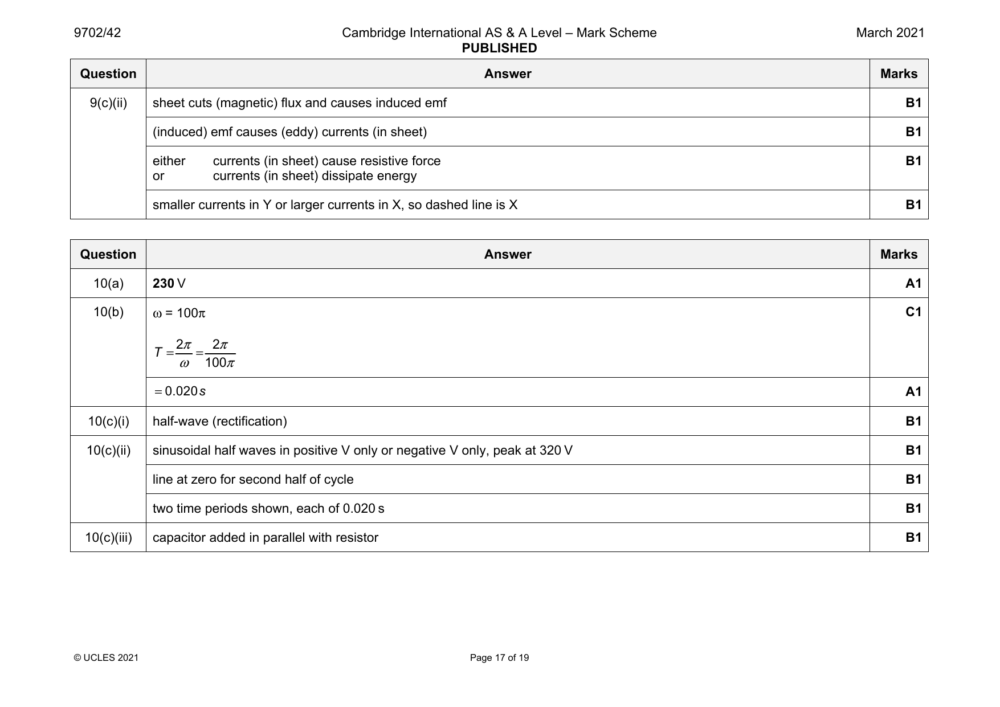
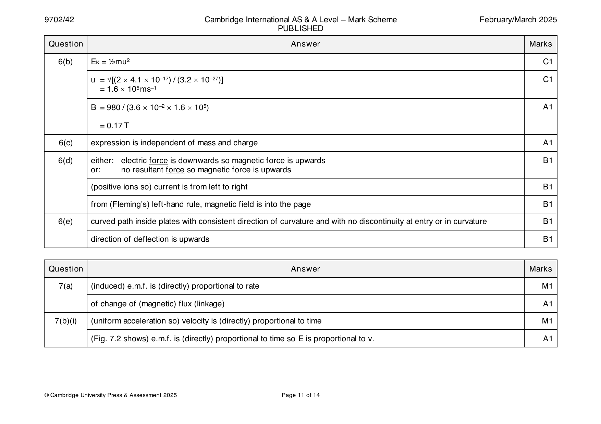
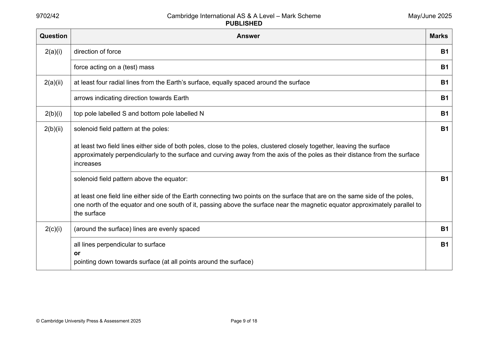

9702-2021-m-42-q09
March 2021 · Paper 42 · Question 9 · 10 marks


9(a) (magnetic) flux density × area × number of turns M1
area is perpendicular to (magnetic) field A1
9(b) use of t = 1.2 s C1
ΔBAN C1
ε=
Δt
0.250×π×0.0302×540
=
1.2
=0.32V A1
9(c)(i) light damping B1
© UCLES 2021 Page 16 of 19
9(c)(ii) sheet cuts (magnetic) flux and causes induced emf B1
(induced) emf causes (eddy) currents (in sheet) B1
either currents (in sheet) cause resistive force B1
or currents (in sheet) dissipate energy
smaller currents in Y or larger currents in X, so dashed line is X B1
Question Answer Marks
Official mark scheme pages: 16, 17 · source PDF URL
9702-2021-mj-41-q09
May/June 2021 · Paper 41 · Question 9 · 9 marks
9(a) region where there is a force exerted on M1
a current-carrying conductor A1
or
a moving charge
or
a magnetic material/magnetic pole
9(b)(i) face PSWV shaded B1
9(b)(ii) accumulating electrons cause an electric field (between the faces) B1
force due to electric field opposes force due to magnetic field B1
accumulation stops when magnetic force equals electric force B1
9(c)(i) number density of charge carriers B1
9(c)(ii) PV or QT or SW B1
9(d) (for semiconductor,) n is (much) smaller so V (much) larger B1
H
© UCLES 2021 Page 15 of 18
Official mark scheme pages: 15 · source PDF URL
9702-2021-mj-41-q10
May/June 2021 · Paper 41 · Question 10 · 9 marks
10(a) direction of (induced) e.m.f. M1
is such as to oppose the change causing it A1
10(b) ring cuts (magnetic) flux and causes induced e.m.f. in ring B1
(induced) e.m.f. causes (eddy/induced) currents (in ring) B1
currents (in ring) cause magnetic field (around ring) M1
two fields interact to cause resistive/opposing force A1
or
current (in ring) is in a magnetic field (M1)
which causes resistive force (A1)
or
currents (in ring) dissipate thermal energy (M1)
(thermal) energy comes from energy of oscillations (A1)
10(c) current cannot pass all the way around the ring B1
(induced) currents smaller B1
smaller resistive force (so more oscillations) B1
or
smaller rate of dissipation of energy (so more oscillations)
© UCLES 2021 Page 16 of 18
Official mark scheme pages: 16 · source PDF URL
9702-2021-mj-42-q08
May/June 2021 · Paper 42 · Question 8 · 10 marks
8(a) • force per unit length B2
• force per unit current
• length/current perpendicular to field
1 mark for any two points, 2 marks for all three points
8(b) change in potential energy = change in kinetic energy B1
or
qV = ½mv2
v = √(2qV / m) A1
8(c)(i) magnetic force = centripetal force M1
or
Bqv = mv2 / r
clear substitution of expression for v and correct algebra leading to q / m = 2V / B2r2 A1
8(c)(ii) q / m = (2 × 230) / [(0.38 × 10–3)2 × 0.142] C1
= 1.6 × 1011 C kg–1 A1
8(c)(iii) (for α-particle,) q / m is (much) smaller B1
r would be much larger B1
© UCLES 2021 Page 15 of 19
Official mark scheme pages: 15 · source PDF URL
9702-2021-mj-42-q09
May/June 2021 · Paper 42 · Question 9 · 9 marks
9(a) (particle is) stationary/not moving B1
(particle is) moving parallel to the (magnetic) field B1
9(b) magnetic field around each coil is circular B1
or
each coil is normal to magnetic field due to adjacent coils
current in coil interacts with (magnetic) field to exert force (on coil) B1
force is normal to both coil and magnetic field B1
or
force parallel to axis (of coil)
forces between coils are attractive so spring contracts B1
9(c) (oscillating) coils cut magnetic flux B1
or
as separation of coils changes, magnetic flux changes
cutting flux causes induced e.m.f. in coils B1
changing (induced) e.m.f. causes changing current (in coil) B1
© UCLES 2021 Page 16 of 19
Official mark scheme pages: 16 · source PDF URL
9702-2021-mj-43-q09
May/June 2021 · Paper 43 · Question 9 · 9 marks
9(a) region where there is a force exerted on M1
a current-carrying conductor A1
or
a moving charge
or
a magnetic material/magnetic pole
9(b)(i) face PSWV shaded B1
9(b)(ii) accumulating electrons cause an electric field (between the faces) B1
force due to electric field opposes force due to magnetic field B1
accumulation stops when magnetic force equals electric force B1
9(c)(i) number density of charge carriers B1
9(c)(ii) PV or QT or SW B1
9(d) (for semiconductor,) n is (much) smaller so V (much) larger B1
H
© UCLES 2021 Page 15 of 18
Official mark scheme pages: 15 · source PDF URL
9702-2021-mj-43-q10
May/June 2021 · Paper 43 · Question 10 · 9 marks
10(a) direction of (induced) e.m.f. M1
is such as to oppose the change causing it A1
10(b) ring cuts (magnetic) flux and causes induced e.m.f. in ring B1
(induced) e.m.f. causes (eddy/induced) currents (in ring) B1
currents (in ring) cause magnetic field (around ring) M1
two fields interact to cause resistive/opposing force A1
or
current (in ring) is in a magnetic field (M1)
which causes resistive force (A1)
or
currents (in ring) dissipate thermal energy (M1)
(thermal) energy comes from energy of oscillations (A1)
10(c) current cannot pass all the way around the ring B1
(induced) currents smaller B1
smaller resistive force (so more oscillations) B1
or
smaller rate of dissipation of energy (so more oscillations)
© UCLES 2021 Page 16 of 18
Official mark scheme pages: 16 · source PDF URL
9702-2021-on-41-q08
Oct/Nov 2021 · Paper 41 · Question 8 · 6 marks
8(a) newton per ampere per metre M1
where current/wire is perpendicular to magnetic field A1
8(b)(i) F = BILsinθ C1
B = 1.0 / (5.0 × 0.060 × sin 50°) A1
= 4.4 mT
8(b)(ii) (from Fleming’s left-hand rule) force on wire is upwards, so reading decreases B1
8(b)(iii) frame will rotate (so that PQ becomes perpendicular to the field) B1
Question Answer Marks
Official mark scheme pages: 13 · source PDF URL
9702-2021-on-42-q08
Oct/Nov 2021 · Paper 42 · Question 8 · 5 marks
8(a)(i) arrow from Q pointing downwards, labelled B B1
8(a)(ii) arrow from Q pointing towards P, labelled F B1
8(b)(i) force is proportional to product of both currents (I and 2I) B1
or
Newton’s third law
forces are equal B1
8(b)(ii) opposite B1
© UCLES 2021 Page 14 of 19
Official mark scheme pages: 14 · source PDF URL
9702-2021-on-43-q08
Oct/Nov 2021 · Paper 43 · Question 8 · 6 marks
8(a) newton per ampere per metre M1
where current/wire is perpendicular to magnetic field A1
8(b)(i) F = BILsinθ C1
B = 1.0 / (5.0 × 0.060 × sin 50°) A1
= 4.4 mT
8(b)(ii) (from Fleming’s left-hand rule) force on wire is upwards, so reading decreases B1
8(b)(iii) frame will rotate (so that PQ becomes perpendicular to the field) B1
Question Answer Marks
Official mark scheme pages: 13 · source PDF URL
9702-2022-m-42-q06
March 2022 · Paper 42 · Question 6 · 7 marks
6(a) less in smaller solenoid B1
6(b) greater in smaller solenoid B1
6(c)(i) direction of (induced) e.m.f. M1
such as to (produce effects that) oppose the change that caused it A1
6(c)(ii) change of flux (linkage) in smaller solenoid induces e.m.f. in smaller solenoid B1
(induced) current in smaller solenoid causes field around it B1
the two fields (interact to) create an attractive force B1
Question Answer Marks
Official mark scheme pages: 11 · source PDF URL
9702-2022-mj-41-q02
May/June 2022 · Paper 41 · Question 2 · 8 marks
2(a)(i) (vertically) downwards B1
2(a)(ii) magnetic force (on sphere) is perpendicular to its velocity B1
magnetic force perpendicular to velocity is the centripetal force B1
or
magnetic force perpendicular to velocity causes centripetal acceleration
or
acceleration perpendicular to velocity is centripetal (acceleration)
or
magnetic force does not change the speed of the sphere
or
magnetic force has constant magnitude
2(b) mg = Eq C1
E = (1.6 10–10 9.81) / (0.27 10–9) A1
= 5.8 N C–1
2(c) centripetal force = magnetic force B1
or
Bqv = mv2 / r
B = mv / qr C1
= (1.6 10–10 0.78) / (0.27 10–9 3.4) = 0.14 T A1
© UCLES 2022 Page 8 of 16
Official mark scheme pages: 8 · source PDF URL
9702-2022-mj-41-q06
May/June 2022 · Paper 41 · Question 6 · 11 marks
6(a) product of (magnetic) flux density and area M1
where area is perpendicular to the (magnetic) field A1
6(b)(i) N = BAN C1
= 400 10–3 0.122 8 C1
= 0.046 Wb A1
6(b)(ii) (line is a) straight line B1
6(b)(iii) (induced) e.m.f. = rate of change of flux linkage C1
e.m.f. = N / t A1
= 0.046 / 0.60
= 0.077 V
6(c) (induced e.m.f. causes) current flow (in the coil) B1
either
current (in magnetic field) causes forces to act on the coil B1
(opposite sides of) coil forced inwards B1
or
current causes dissipation of energy in the resistance of the coil (B1)
temperature of the coil rises (B1)
© UCLES 2022 Page 12 of 16
Official mark scheme pages: 12 · source PDF URL
9702-2022-mj-42-q06
May/June 2022 · Paper 42 · Question 6 · 10 marks
6(a) there must be a current (in the wire) B1
(wire) must be at a non-zero angle to the magnetic field B1
6(b)(i) arrow from X pointing horizontally to the left B1
arrow from Y pointing diagonally upwards and to the left at about 45° B1
arrow from Z pointing horizontally to the right B1
6(b)(ii) (flux densities at W and X are approximately) equal B1
(flux density at) Y greater than (flux density at) Z B1
6(c) current in wire creates magnetic field around wire B1
(each) wire sits in the magnetic field created by the other B1
(for each wire,) current / wire is perpendicular to magnetic field (due to other wire), (so) experiences a (magnetic) force B1
© UCLES 2022 Page 12 of 16
Official mark scheme pages: 12 · source PDF URL
9702-2022-mj-42-q07
May/June 2022 · Paper 42 · Question 7 · 10 marks
7(a) induced e.m.f. is (directly) proportional to rate M1
of change of (magnetic) flux (linkage) A1
7(b) V stepped, all at non-zero values, between t = 0 and t = 0.40 s B1
2
V shown with same non-zero magnitude up to t = 0.15 s and after t = 0.25 s but with a different magnitude between these B1
2
times
V shown with a magnitude between t = 0.15 s and t = 0.25 s that is three times the magnitude before t = 0.15 s and after B1
2
t = 0.25 s
V shown with same sign up to t = 0.15 s and after t = 0.25 s, and opposite sign in between B1
2
7(c)(i) changing current in coil causes changing (magnetic) field B1
or
changing (magnetic) flux causes induced e.m.f. in ring
induced e.m.f. in ring causes current in ring B1
(magnetic) field due to (induced) current in ring interacts with (coil’s) field to cause upwards force (on ring) B1
or
(induced) current in ring perpendicular to (coil’s magnetic) field causes upwards force (on ring)
7(c)(ii) both magnetic fields reverse direction so ring still jumps up B1
or
current (in ring) and (coil’s) field both reverse so ring still jumps up
© UCLES 2022 Page 13 of 16
Official mark scheme pages: 13 · source PDF URL
9702-2022-mj-43-q02
May/June 2022 · Paper 43 · Question 2 · 8 marks
2(a)(i) (vertically) downwards B1
2(a)(ii) magnetic force (on sphere) is perpendicular to its velocity B1
magnetic force perpendicular to velocity is the centripetal force B1
or
magnetic force perpendicular to velocity causes centripetal acceleration
or
acceleration perpendicular to velocity is centripetal (acceleration)
or
magnetic force does not change the speed of the sphere
or
magnetic force has constant magnitude
2(b) mg = Eq C1
E = (1.6 10–10 9.81) / (0.27 10–9) A1
= 5.8 N C–1
2(c) centripetal force = magnetic force B1
or
Bqv = mv2 / r
B = mv / qr C1
= (1.6 10–10 0.78) / (0.27 10–9 3.4) = 0.14 T A1
© UCLES 2022 Page 8 of 16
Official mark scheme pages: 8 · source PDF URL
9702-2022-mj-43-q06
May/June 2022 · Paper 43 · Question 6 · 11 marks
6(a) product of (magnetic) flux density and area M1
where area is perpendicular to the (magnetic) field A1
6(b)(i) N = BAN C1
= 400 10–3 0.122 8 C1
= 0.046 Wb A1
6(b)(ii) (line is a) straight line B1
6(b)(iii) (induced) e.m.f. = rate of change of flux linkage C1
e.m.f. = N / t A1
= 0.046 / 0.60
= 0.077 V
6(c) (induced e.m.f. causes) current flow (in the coil) B1
either
current (in magnetic field) causes forces to act on the coil B1
(opposite sides of) coil forced inwards B1
or
current causes dissipation of energy in the resistance of the coil (B1)
temperature of the coil rises (B1)
© UCLES 2022 Page 12 of 16
Official mark scheme pages: 12 · source PDF URL
9702-2022-on-41-q06
Oct/Nov 2022 · Paper 41 · Question 6 · 9 marks
6(a)(i) PQRS and WXYZ B1
6(a)(ii) force on charge carriers is perpendicular to both (magnetic) field and current B1
as charge carriers are deflected to one side, an electric field is set up B1
(steady V when) electric and magnetic forces on charge carriers are equal (and opposite) B1
H
6(b)(i) n: number density of charge carriers B1
t: distance PW (or SZ or QX or RY) B1
q: charge on each charge carrier B1
6(b)(ii) V inversely proportional to t B1
H
(so t needs to be small for) V to be large enough to measure B1
H
© UCLES 2022 Page 11 of 15
Official mark scheme pages: 11 · source PDF URL
9702-2022-on-42-q07
Oct/Nov 2022 · Paper 42 · Question 7 · 10 marks
7(a) force per unit current M1
force per unit length M1
current / wire is perpendicular to (magnetic) field (lines) A1
7(b)(i) current (in coil) is perpendicular to magnetic field (so force on wire) B1
force (on wire) is perpendicular to current and field (so is vertical) B1
or
current and field are both horizontal (so force is vertical)
7(b)(ii) NBIL = mg C1
B = (2.16 10–3 9.81) / (40 3.94 0.0300) C1
= 4.48 10–3 T A1
7(b)(iii) (magnetic) forces (on balance and newton meter) are (equal and) opposite B1
reading = 0.563 – (2.16 10–3 9.81) A1
= 0.542 N
© UCLES 2022 Page 13 of 16
Official mark scheme pages: 13 · source PDF URL
9702-2022-on-42-q08
Oct/Nov 2022 · Paper 42 · Question 8 · 11 marks
8(a) direction of induced e.m.f. M1
such as to (produce effects that) oppose the change that caused it A1
8(b)(i) X = 0.85 A A1
Y = 2 / 0.040 C1
= 160 rad s–1 A1
8(b)(ii) two cycles of a sinusoidal curve with a period of 0.040 s B1
correct phase (i.e. V max / min at t = 0, 0.02, 0.04, 0.06 and 0.08 s, and V zero at t = 0.01, 0.03, 0.05, 0.07 s) B1
2 2
maximum / minimum V shown (consistently) at ± 6.5 V B1
2
8(b)(iii) (magnitude of) V is proportional to rate of change of (magnetic) flux B1
2
• V is proportional to gradient of I –t curve B2
2 1
• V has maximum magnitude when I –t curve is steepest
2 1
• V is zero when I –t curve is horizontal / a maximum or minimum
2 1
• V changes sign when sign of gradient of I –t curve changes
2 1
Any two points, 1 mark each
© UCLES 2022 Page 14 of 16
Official mark scheme pages: 14 · source PDF URL
9702-2022-on-43-q06
Oct/Nov 2022 · Paper 43 · Question 6 · 9 marks
6(a)(i) PQRS and WXYZ B1
6(a)(ii) force on charge carriers is perpendicular to both (magnetic) field and current B1
as charge carriers are deflected to one side, an electric field is set up B1
(steady V when) electric and magnetic forces on charge carriers are equal (and opposite) B1
H
6(b)(i) n: number density of charge carriers B1
t: distance PW (or SZ or QX or RY) B1
q: charge on each charge carrier B1
6(b)(ii) V inversely proportional to t B1
H
(so t needs to be small for) V to be large enough to measure B1
H
© UCLES 2022 Page 11 of 15
Official mark scheme pages: 11 · source PDF URL
9702-2023-m-42-q06
March 2023 · Paper 42 · Question 6 · 8 marks
6(a) it is zero when (plane of) probe is parallel to the (magnetic) field (lines) B1
it is maximum when (plane of) probe is perpendicular to (magnetic) field (lines) B1
6(b)(i) number density of charge carriers B1
6(b)(ii) smaller value of n so greater Hall voltage / V B1
H
6(c) (36mV corresponds to) 48 mT C1
use of 1.4 s or (8.6 – 7.2) s C1
E = BAN / t C1
4810−30.0182780 A1
=
1.4
= 0.027V
© UCLES 2023 Page 14 of 18
Official mark scheme pages: 14 · source PDF URL
9702-2023-mj-41-q06
May/June 2023 · Paper 41 · Question 6 · 10 marks
6(a) a region where a force acts on M1
a current-carrying conductor A1
or
a moving charge
or
a magnetic material / magnetic pole
6(b) concentric circles around the wire B1
spacing between circles increases with distance from wire B1
arrows showing direction of field is clockwise B1
6(c)(i) F = BIL C1
force per unit length = BI A1
= 2.6 10–3 5.0
= 0.013 N m–1
6(c)(ii) to the right B1
6(c)(iii) force (per unit length) has the same magnitude due to Newton’s 3rd law B1
0.013 = 1.5 10–3 I A1
current = 8.7 A
© UCLES 2023 Page 12 of 16
Official mark scheme pages: 12 · source PDF URL
9702-2023-mj-42-q06
May/June 2023 · Paper 42 · Question 6 · 10 marks
6(a)(i) product of (magnetic) flux density and area M1
area perpendicular to the (magnetic) field A1
6(a)(ii) flux = B r2 C1
= 0.17 0.362
= 6.9 10–2 Wb A1
6(b) time for one revolution = 1 / 25 s C1
e.m.f. = rate of cutting flux or / t C1
= 0.069 25 A1
= 1.7 V
6(c) current (in disc) is perpendicular to magnetic field B1
or
current causes force to act on disc
force opposes rotation of disc B1
left-hand rule indicates current is from rim to axle B1
© UCLES 2023 Page 11 of 15
Official mark scheme pages: 11 · source PDF URL
9702-2023-mj-43-q06
May/June 2023 · Paper 43 · Question 6 · 10 marks
6(a) a region where a force acts on M1
a current-carrying conductor A1
or
a moving charge
or
a magnetic material / magnetic pole
6(b) concentric circles around the wire B1
spacing between circles increases with distance from wire B1
arrows showing direction of field is clockwise B1
6(c)(i) F = BIL C1
force per unit length = BI A1
= 2.6 10–3 5.0
= 0.013 N m–1
6(c)(ii) to the right B1
6(c)(iii) force (per unit length) has the same magnitude due to Newton’s 3rd law B1
0.013 = 1.5 10–3 I A1
current = 8.7 A
© UCLES 2023 Page 12 of 16
Official mark scheme pages: 12 · source PDF URL
9702-2023-on-41-q06
Oct/Nov 2023 · Paper 41 · Question 6 · 12 marks
6(a) • force per unit length B2
• force per unit current
• length / current perpendicular to field
1 mark for any two points, 2 marks for all three points
6(b)(i) into the page B1
6(b)(ii) F = Bqv C1
= 4.8 10–3 1.6 10–19 1.7 107 = 1.3 10–14 N A1
6(b)(iii) arrow at point X pointing down the page B1
6(b)(iv) F = mv2 / r C1
1.3 10–14 = (9.11 10–31) (1.7 107)2 / r C1
(r = 0.020 m) A1
d = 2r
d = 0.040 m
6(c) path shows upwards deflection such that the curvature is always anticlockwise within the field B1
circular path with larger radius B1
line enters field at X and leaves field at distance 2d vertically from X B1
© UCLES 2023 Page 12 of 16
Official mark scheme pages: 12 · source PDF URL
9702-2023-on-42-q07
Oct/Nov 2023 · Paper 42 · Question 7 · 11 marks
7(a)(i) V = BI / ntq A1
H
= (4.0 10–6 5.4) / (1.5 1016 1.8 10–3 1.60 10–19) = 5.0 V
7(a)(ii) sketch: straight diagonal line from (0, 0) to t = 0.020 s B1
and
straight diagonal line between two non-zero V values of same sign from t = 0.040 to 0.050 s
H
horizontal straight line at V = 5.0 V from t = 0.020 to 0.040 s B1
H
horizontal straight line at V = 2.5 V from t = 0.050 to 0.080 s B1
H
7(b)(i) e.m.f. = rate of change of (magnetic) flux (linkage) C1
E = NA ΔB / Δt or E = NA gradient (at t = 0.010 s) C1
E = 3000 3.4 10–4 (4.0 10–6) / (0.020) = 2.0 10–4 V A1
7(b)(ii) sketch: line showing non-zero E from t = 0 to t = 0.020 s and from t = 0.040 s to t = 0.050 s, and E = 0 at all other times B1
‘top hats’ showing constant non-zero E from t = 0 to t = 0.020 s and from t = 0.040 s to t = 0.050 s B1
magnitude of E shown as 2.0 10–4 V in both non-zero sections B1
sign of E in the t = 0 to t = 0.020 s region opposite to the sign of E in the t = 0.040 s to t = 0.050 s region B1
© UCLES 2023 Page 12 of 15
Official mark scheme pages: 12 · source PDF URL
9702-2023-on-43-q06
Oct/Nov 2023 · Paper 43 · Question 6 · 12 marks
6(a) • force per unit length B2
• force per unit current
• length / current perpendicular to field
1 mark for any two points, 2 marks for all three points
6(b)(i) into the page B1
6(b)(ii) F = Bqv C1
= 4.8 10–3 1.6 10–19 1.7 107 = 1.3 10–14 N A1
6(b)(iii) arrow at point X pointing down the page B1
6(b)(iv) F = mv2 / r C1
1.3 10–14 = (9.11 10–31) (1.7 107)2 / r C1
(r = 0.020 m) A1
d = 2r
d = 0.040 m
6(c) path shows upwards deflection such that the curvature is always anticlockwise within the field B1
circular path with larger radius B1
line enters field at X and leaves field at distance 2d vertically from X B1
© UCLES 2023 Page 12 of 16
Official mark scheme pages: 12 · source PDF URL
9702-2024-m-42-q05
March 2024 · Paper 42 · Question 5 · 10 marks
5(a) any 2 points from: B2
• (angular) displacement
• velocity
• momentum
• (centripetal) acceleration
• (resultant) force
5(b)(i) Bqv = mv2 / r M1
v = 2r / T M1
completion of algebra leading to B = 2m / qT A1
5(b)(ii) B = (2 4 1.66 10–27) / (2 1.60 10–19 2.5 10–6) C1
= 0.052 T A1
5(b)(iii) either the same because T is independent of r B1
or the same because B, q and m are unchanged
or the same because both radius and speed have doubled
5(b)(iv) qE = Bqv C1
E = Bv = 0.052 1.1 106 A1
= 5.7 104 N C–1
© Cambridge University Press & Assessment 2024 Page 9 of 14
Official mark scheme pages: 9 · source PDF URL
9702-2024-m-42-q06
March 2024 · Paper 42 · Question 6 · 11 marks
6(a)(i) non-zero horizontal straight line from X to Y B1
6(a)(ii) constant flux density (inside coil) B1
either (magnetic) flux linkage proportional to flux density B1
or = BAN and B, A and N are all constant
6(a)(iii) = BAN C1
= 0.080 0.71 10–4 64 A1
= 3.6 10–4 Wb
6(a)(iv) sketch showing: B1
E is zero from time 0 to time t and non-zero after time t
E has constant non-zero magnitude between time t and time 4t B1
E has non-zero value of one sign between time t and time 2t, and non-zero value of the opposite sign between time 2t and B1
time 4t
6(b) current in spring creates a magnetic field around the spring B1
either (magnetic) fields around adjacent turns interact to cause a force to be exerted (between the turns) B1
or current in one turn interacts with (magnetic) field due to adjacent turns to cause force to be exerted (between the
turns)
(magnetic force) is attractive so distance (between turns) decreases B1
© Cambridge University Press & Assessment 2024 Page 10 of 14
Official mark scheme pages: 10 · source PDF URL
9702-2024-mj-41-q05
May/June 2024 · Paper 41 · Question 5 · 13 marks
5(a) force per unit charge B1
force on positive charge B1
5(b)(i) four straight vertical parallel lines, approximately evenly spaced B1
arrows downwards B1
5(b)(ii) E = V / d C1
E = 430 / 0.067 A1
= 6.4 103 N C–1
5(b)(iii) smooth curve within plates and straight lines outside plates B1
direction of deflection shown as upwards B1
5(c)(i) into the page B1
5(c)(ii) forces are in opposite directions B1
(undeviated) when (magnitudes of) forces are equal B1
5(c)(iii) Eq = Bqv C1
B = E / v = (6.4 103) / (2.6 107) A1
= 2.5 10–4 T
© Cambridge University Press & Assessment 2024 Page 10 of 15
Official mark scheme pages: 10 · source PDF URL
9702-2024-mj-42-q07
May/June 2024 · Paper 42 · Question 7 · 14 marks
7(a) (induced) e.m.f. is (directly) proportional to rate M1
of change of (magnetic) flux (linkage) A1
7(b)(i) = BA C1
= 7.2 10–3 3.2 10–4 A1
= 2.3 10–6 Wb
7(b)(ii) tangent drawn at steepest point on Fig. 7.2 C1
evidence of multiplication by 340 C1
maximum rate of change of flux = 0.82 Wb s–1 A1
7(b)(iii) V = 0.82 V A1
0
or
V given as identical numerical answer to the answer in (b)(ii)
0
7(b)(iv) sinusoidal curve of period 2.0 ms from t = 0 to t = 6.0 ms B1
all peaks at +V and all troughs at –V B1
0 0
line showing V = 0 at (and only at) t = 0, 1.0, 2.0, 3.0, 4.0, 5.0 and 6.0 ms B1
7(b)(v) A = 0.82 V A1
or
A has same numerical value as answer in (b)(iii), with unit V
B = 2 / (2.0 10–3) C1
= 3100 rad s–1 A1
© Cambridge University Press & Assessment 2024 Page 12 of 16
Official mark scheme pages: 12 · source PDF URL
9702-2024-mj-43-q05
May/June 2024 · Paper 43 · Question 5 · 13 marks
5(a) force per unit charge B1
force on positive charge B1
5(b)(i) four straight vertical parallel lines, approximately evenly spaced B1
arrows downwards B1
5(b)(ii) E = V / d C1
E = 430 / 0.067 A1
= 6.4 103 N C–1
5(b)(iii) smooth curve within plates and straight lines outside plates B1
direction of deflection shown as upwards B1
5(c)(i) into the page B1
5(c)(ii) forces are in opposite directions B1
(undeviated) when (magnitudes of) forces are equal B1
5(c)(iii) Eq = Bqv C1
B = E / v = (6.4 103) / (2.6 107) A1
= 2.5 10–4 T
© Cambridge University Press & Assessment 2024 Page 10 of 15
Official mark scheme pages: 10 · source PDF URL
9702-2024-on-41-q07
Oct/Nov 2024 · Paper 41 · Question 7 · 11 marks
7(a) • force per unit length B2
• force per unit current
• length / current perpendicular to field
1 mark for any two points, 2 marks for all three points
7(b) concentric circles around the wire (at least two circles needed) B1
spacing between circles increases with distance from wire (at least four circles needed) B1
arrows showing direction of field is clockwise B1
7(c)(i) (each) wire sits in the (magnetic) field created by the other B1
current (in one wire) is perpendicular to (magnetic) field (due to other wire) so (magnetic) force acts (on wire) B1
7(c)(ii) arrow drawn, starting from X and pointing towards Y, labelled F B1
7(c)(iii) (forces have) equal magnitudes B1
(forces are in) opposite directions B1
7(c)(iv) no change (in the direction of the force) since both the current in X and the field due to Y have reversed B1
© Cambridge University Press & Assessment 2024 Page 12 of 15
Official mark scheme pages: 12 · source PDF URL
9702-2024-on-42-q01
Oct/Nov 2024 · Paper 42 · Question 1 · 13 marks
1(a)(i) v = r C1
= 0.85 140 A1
= 120 m s–1
1(a)(ii) a = r2 or a = v2 / r C1
a = 0.85 1402 or 1202 / 0.85 A1
= 1.7 104 m s–2
1(b)(i) direction of (induced) e.m.f. M1
is such as to (produce effects that) oppose the change that caused it A1
1(b)(ii) T = 2 / A1
= 2 / 140 = 0.045 s = 45 ms
1(b)(iii) = BA C1
= 0.18 0.852 C1
= 0.41 Wb A1
1(b)(iv) E = / t C1
= 0.41 / 0.045 A1
= 9.1 V
1(b)(v) force (on spoke) must be anticlockwise, so current is from A to X (by Fleming’s left hand rule), so X is at the higher potential B1
© Cambridge University Press & Assessment 2024 Page 5 of 14
Official mark scheme pages: 5 · source PDF URL
9702-2024-on-43-q07
Oct/Nov 2024 · Paper 43 · Question 7 · 11 marks
7(a) • force per unit length B2
• force per unit current
• length / current perpendicular to field
1 mark for any two points, 2 marks for all three points
7(b) concentric circles around the wire (at least two circles needed) B1
spacing between circles increases with distance from wire (at least four circles needed) B1
arrows showing direction of field is clockwise B1
7(c)(i) (each) wire sits in the (magnetic) field created by the other B1
current (in one wire) is perpendicular to (magnetic) field (due to other wire) so (magnetic) force acts (on wire) B1
7(c)(ii) arrow drawn, starting from X and pointing towards Y, labelled F B1
7(c)(iii) (forces have) equal magnitudes B1
(forces are in) opposite directions B1
7(c)(iv) no change (in the direction of the force) since both the current in X and the field due to Y have reversed B1
© Cambridge University Press & Assessment 2024 Page 12 of 15
Official mark scheme pages: 12 · source PDF URL
9702-2025-m-42-q06
March 2025 · Paper 42 · Question 6 · 11 marks


6(a) F = F B1
B E
either: Bqu = qE and E = V / d leading to u = V / Bd B1
or: Bqu = qV / d leading to u = V / Bd
© Cambridge University Press & Assessment 2025 Page 10 of 14
6(b) E = ½mu2 C1
K
u = √[(2 4.1 10–17) / (3.2 10–27)] C1
= 1.6 105ms–1
B = 980 / (3.6 10–2 1.6 105) A1
= 0.17T
6(c) expression is independent of mass and charge A1
6(d) either: electric force is downwards so magnetic force is upwards B1
or: no resultant force so magnetic force is upwards
(positive ions so) current is from left to right B1
from (Fleming’s) left-hand rule, magnetic field is into the page B1
6(e) curved path inside plates with consistent direction of curvature and with no discontinuity at entry or in curvature B1
direction of deflection is upwards B1
Question Answer Marks
Official mark scheme pages: 10, 11 · source PDF URL
9702-2025-m-42-q07
March 2025 · Paper 42 · Question 7 · 9 marks
7(a) (induced) e.m.f. is (directly) proportional to rate M1
of change of (magnetic) flux (linkage) A1
7(b)(i) (uniform acceleration so) velocity is (directly) proportional to time M1
(Fig. 7.2 shows) e.m.f. is (directly) proportional to time so E is proportional to v. A1
© Cambridge University Press & Assessment 2025 Page 11 of 14
7(b)(ii) (v = at so) distance moved in time t = att C1
= BA C1
E = ( / t) = B L (att) / t = BLat A1
7(b)(iii) B = (0.30 10–3) / (0.45 7.8 2.0) C1
= 4.3 10–5T A1
Question Answer Marks
Official mark scheme pages: 11, 12 · source PDF URL
9702-2025-mj-41-q07
May/June 2025 · Paper 41 · Question 7 · 10 marks
7(a) • force per unit length B2
• force per unit current
• length / current perpendicular to field
1 mark for any two points, 2 marks for all three points.
7(b)(i) F = BQv B1
7(b)(ii) arrow at Y pointing vertically upwards B1
7(b)(iii) upwards deflection showing circular path B1
7(c)(i) electric field applied vertically downwards (may be shown on a labelled diagram) B1
electric force on particle in opposite direction to magnetic force (may be shown on a labelled diagram) B1
particle undeflected when magnitudes of electric and magnetic forces are equal B1
7(c)(ii) EQ = BQv B1
v = E / B A1
© Cambridge University Press & Assessment 2025 Page 15 of 19
Official mark scheme pages: 15 · source PDF URL
9702-2025-mj-42-q02
May/June 2025 · Paper 42 · Question 2 · 12 marks


2(a)(i) direction of force B1
force acting on a (test) mass B1
2(a)(ii) at least four radial lines from the Earth’s surface, equally spaced around the surface B1
arrows indicating direction towards Earth B1
2(b)(i) top pole labelled S and bottom pole labelled N B1
2(b)(ii) solenoid field pattern at the poles: B1
at least two field lines either side of both poles, close to the poles, clustered closely together, leaving the surface
approximately perpendicularly to the surface and curving away from the axis of the poles as their distance from the surface
increases
solenoid field pattern above the equator: B1
at least one field line either side of the Earth connecting two points on the surface that are on the same side of the poles,
one north of the equator and one south of it, passing above the surface near the magnetic equator approximately parallel to
the surface
2(c)(i) (around the surface) lines are evenly spaced B1
all lines perpendicular to surface B1
or
pointing down towards surface (at all points around the surface)
© Cambridge University Press & Assessment 2025 Page 9 of 18
2(c)(ii) Any three bulleted points from: B3
• strongest at the poles
• weakest near the Equator
Up to two points from:
• perpendicular to surface at the poles
• parallel to the surface near the Equator
• angle to surface increases from Equator to poles
Question Answer Marks
Official mark scheme pages: 9, 10 · source PDF URL
9702-2025-mj-43-q07
May/June 2025 · Paper 43 · Question 7 · 10 marks
7(a) • force per unit length B2
• force per unit current
• length / current perpendicular to field
1 mark for any two points, 2 marks for all three points.
7(b)(i) F = BQv B1
7(b)(ii) arrow at Y pointing vertically upwards B1
7(b)(iii) upwards deflection showing circular path B1
7(c)(i) electric field applied vertically downwards (may be shown on a labelled diagram) B1
electric force on particle in opposite direction to magnetic force (may be shown on a labelled diagram) B1
particle undeflected when magnitudes of electric and magnetic forces are equal B1
7(c)(ii) EQ = BQv B1
v = E / B A1
© Cambridge University Press & Assessment 2025 Page 15 of 19
Official mark scheme pages: 15 · source PDF URL
9702-2025-on-41-q07
Oct/Nov 2025 · Paper 41 · Question 7 · 11 marks
7(a) (induced) e.m.f. is (directly) proportional to rate M1
of change of (magnetic) flux (linkage) A1
7(b)(i) flux = e.m.f. time C1
flux = 0.54 15 A1
= 8.1 Wb
7(b)(ii) = BA C1
area = 8.1 / (38 10–6) A1
= 2.1 105 m2
7(b)(iii) area = speed time width C1
v = (2.1 105) / (15 68) A1
= 210 m s–1
7(b)(iv) opposing force (due to current in wings) must be backwards B1
from Fleming’s left-hand rule, current (in wings) must be from Q to P B1
current is from – to + inside an e.m.f. source so P is at higher potential B1
© Cambridge University Press & Assessment 2025 Page 14 of 17
Official mark scheme pages: 14 · source PDF URL
9702-2025-on-43-q07
Oct/Nov 2025 · Paper 43 · Question 7 · 11 marks
7(a) (induced) e.m.f. is (directly) proportional to rate M1
of change of (magnetic) flux (linkage) A1
7(b)(i) flux = e.m.f. time C1
flux = 0.54 15 A1
= 8.1 Wb
7(b)(ii) = BA C1
area = 8.1 / (38 10–6) A1
= 2.1 105 m2
7(b)(iii) area = speed time width C1
v = (2.1 105) / (15 68) A1
= 210 m s–1
7(b)(iv) opposing force (due to current in wings) must be backwards B1
from Fleming’s left-hand rule, current (in wings) must be from Q to P B1
current is from – to + inside an e.m.f. source so P is at higher potential B1
© Cambridge University Press & Assessment 2025 Page 14 of 17
Official mark scheme pages: 14 · source PDF URL